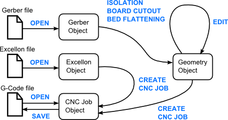

Basics¶
Source Files¶
Supported source files are:
- Gerber: Typically define copper layers in a circuit board.
- Excellon: (drill file): Contain drill specifications, size and coordinates.
- G-Code: CNC machine instructions for cutting and/or drilling.
These source files can be loaded by selecting File→Open Gerber…, File→Open Excellon… or File→Open G-Code… respectively. The objects created from source files are automatically added to the current project when loaded.
Objects and Tasks¶
Data in FlatCAM is in the form of 4 different kinds of objects: Gerber, Excellon, Geometry and CNC Job. Gerber, Excellon and CNC Jos objects are directly created by reading files in Gerber, Excellon and G-Code formats. Geometry objects are an intermediate step available to manipulate data. The diagram bellow illustrates the relationship between files and objects. The arrows connecting objects represent a sub-set of the tasks that can be performed in FlatCAM.
Creating, Saving and Loading Projects¶
A project is everything that you have loaded, created and set inside the program. A new project is created every time you load the program or run File→New.
By running File→Save Project, File→Save Project As… or File→Save a Project Copy… you are saving everything currently in the environment including project options. File→Open Project… lets you load a saved project.